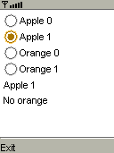

|

|
 |
PContainer container;
PRadioButtonGroup applegroup, orangegroup;
PRadioButton[] radios;
PLabel[] labels;
PLabel apple, orange;
void setup() {
container = new PContainer();
container.setBounds(0, 0, width, height);
applegroup = new PRadioButtonGroup();
orangegroup = new PRadioButtonGroup();
radios = new PRadioButton[4];
labels = new PLabel[4];
int x, y = 4;
PRadioButton radio;
PLabel label;
for (int i = 0; i < 4; i++) {
if (i < 2) {
radio = new PRadioButton(false, applegroup);
label = new PLabel("Apple " + i);
} else {
radio = new PRadioButton(false, orangegroup);
label = new PLabel("Orange " + (i - 2));
}
radio.id = i;
radio.calculateBounds(4, y, 16, 16);
x = radio.x + radio.width + 2;
label.calculateBounds(x, y, width - x, height - y);
radios[i] = radio;
labels[i] = label;
container.add(radio);
container.add(label);
y = max(radio.y + radio.height + 2, label.y + label.height + 2);
}
apple = new PLabel("No apple");
apple.calculateBounds(4, y, width - 8, height - y);
apple.setBounds(4, y, width - 8, apple.height);
container.add(apple);
y = apple.y + apple.height + 2;
orange = new PLabel("No orange");
orange.calculateBounds(4, y, width - 8, height - y);
orange.setBounds(4, y, width - 8, apple.height);
container.add(orange);
container.initialize();
container.acceptFocus();
}
void draw() {
container.draw();
}
void keyPressed() {
container.keyPressed();
}
void keyReleased() {
container.keyReleased();
}
void libraryEvent(Object library, int event, Object data) {
if (library == applegroup) {
apple.text = labels[applegroup.getSelected().id].text;
} else if (library == orangegroup) {
orange.text = labels[orangegroup.getSelected().id].text;
}
} |
 Reference
Reference